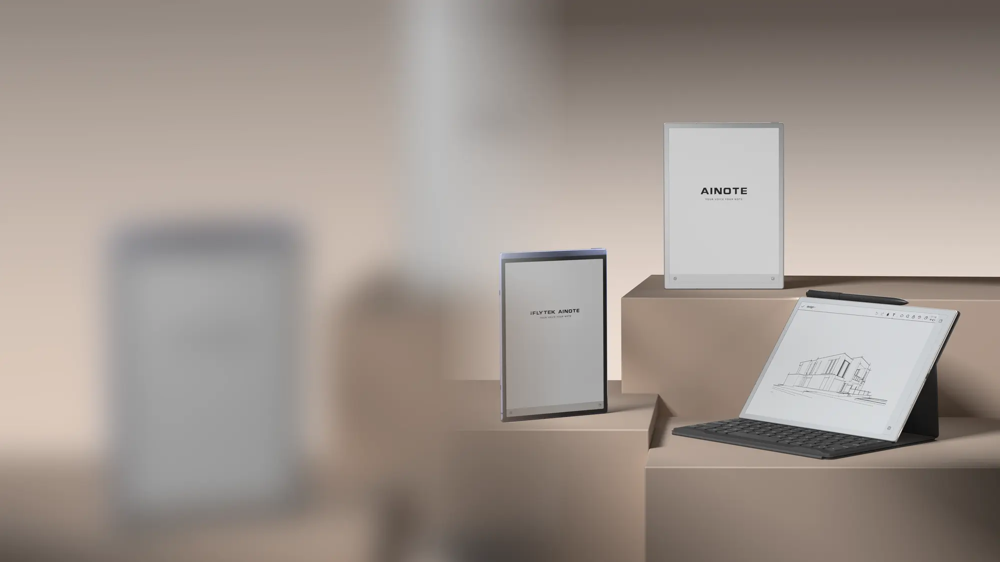

No.1 in Wadiz E-ink
The launch turned unfamiliar benefits into visible use cases and category credibility.



AINOTE Series · Korea · 2025
I led Korea GTM for AINOTE Air 2 and AINOTE 2—from positioning and creative direction to creator strategy, paid media and commerce.
Explore the caseThe market problem
A category people could not name yet
AINOTE sat between categories: an e-ink notebook, an AI meeting assistant and a multilingual work tool. Listing every function made it sound technical; calling it a tablet made it feel interchangeable.
The task was to make its value instantly visible—and give Korean professionals enough proof to trust a new kind of work device.

Positioning
The strategic shift
The promise was a faster, hands-free workflow—with less anxiety about missing what mattered and less time lost to meeting follow-up.

Start with the familiar feel of paper, then let AI work quietly in the background.

Bring handwriting, audio and transcription into one searchable record.

Show translation as part of a real workflow—not as a technical claim.
Commercial proof
Launch, learn, repeat
Both launches used Wadiz as a live market-validation engine, supported by paid social, creator reviews, Naver, PR and product education.
The launch turned unfamiliar benefits into visible use cases and category credibility.

The second launch applied the same GTM system to a broader business-use story.
Social-first creative
A creative system built around the decision journey
Each asset had one strategic job: frame the category, demonstrate the workflow, build belief, or close the sale. Performance determined which role we scaled—and what we changed next.
A fast comparison made AINOTE instantly legible as a new kind of work device.
Meeting transcription turned an abstract AI claim into a task people could immediately picture.
The creative connected paper-like focus, multilingual meetings and AI assistance under one work story.
Clearer utility outperformed the stronger click hook when the objective moved from attention to purchase.
AINOTE 2 · Same campaign period
Performance changed the creative system: urgency stayed as the entry hook, while clearer product utility carried more of the conversion work.
 A
A
Won attention
Won commerce
Decision Keep urgency as the hook. Shift conversion weight toward product-led creative.
Creator proof
Trust through demonstration
Independent reviewers put AINOTE into recognizable routines. Owned how-to content then answered the functional questions that turn curiosity into confidence.

See the AINOTE 2 meeting-recording guide
What carried forward
“A launch creates a spike. A channel ecosystem creates a market.”
Once crowdfunding validated demand, the post-launch mix expanded so the category kept being demonstrated, reviewed and discovered beyond the launch window.
Extend reach and re-engage high-intent audiences.
Demonstrate the workflow and answer questions in real time.
Turn hands-on use into credible reviews and social proof.
Build searchable third-party evidence around product and category terms.
Let's talk